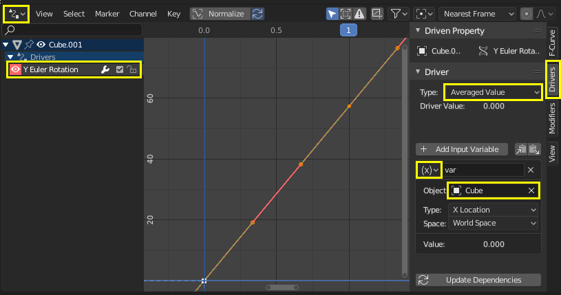
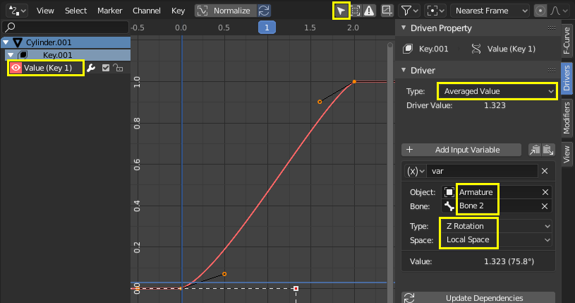

工作流程 & 范例¶
简单驱动器可以通过弹窗添加。
当有多个驱动器或者更高级的设置时，可以使用 驱动器编辑器 。
变换驱动器¶
利用物体的变换来控制属性。在此例中，物体2的Y轴旋转被物体1的X轴位移驱动。
首先，简单设置下两个物体：
通过上下文菜单(右键菜单)或使用快捷键 Ctrl-D ，在第二个物体的Y轴旋转属性上添加驱动器。
打开 驱动器编辑器 ，然后在左侧通道里选择 Y欧拉旋转 。
按下 N 打开侧栏，选择 驱动器 选项卡。
驱动器类型选择平均化值，选择 变换通道 ，在 物体一栏里选择第一个物体。
试着移动物体1，并注意它是如何影响物体2的。
脚本表达式——轨道点¶
使用 脚本表达式 ，控制物体在轨道上运动。当时间轴移动时，物体发生位置变化。
利用三角函数，可以使用正弦和余弦函数在2D中定义圆周运动。 (详见 单位圆.)
在此例中，当前帧作为控制变量。 frame 是一个 简单表达式 对应 bpy.context.scene.frame_current。

在物体X轴位置属性上添加驱动器。
将驱动器 类型 设置为 脚本表达式 。
添加表达式
0 + (sin(frame / 8) * 4)：frame/8: 是但前帧数除以8，除8是为了减速。(sin( )*4): 将结果sin(frame/8)乘以4得到一个更大的圆形。0 +: 控制偏移量。
用同样的方法，在物体Y轴位置属性上添加驱动器，脚本公式为
0 + (sin(frame / 8) * 4)。移动时间轴观察物体位移变化，尝试改变变量来影响轨道大小和中心。
自定义函数 - 数值平方¶
创建自定义函数以获取值的平方（即 值2）。将函数添加到 驱动器命名空间 允许从驱动器表达式使用它。
驱动器命名空间 具有用于驱动器表达式的内置函数的列表，以及常量（如 π 和 e）。可通过 Python 控制台检查：
>>> bpy.app.driver_namespace[' <tab>
acos']
acosh']
asin']
asinh']
atan']
...
要向 [驱动器命名空间 添加新函数，需要实现该函数本身，然后添加到 bpy.app.driver_namespace。
将以下内容添加到 Blender 内的文本编辑器中，然后按下 运行脚本。:
import bpy def square(val): """Returns the square of the given value""" return val * val # Add function to driver_namespace. bpy.app.driver_namespace['square'] = square
添加带有 脚本表达式 的驱动器，如
square(frame)。观察滑动时间线时的效果。
Blender 的文本编辑器 菜单 中提供了更多自定义函数示例。
由于 简单表达式s 无法访问自定义函数，因此使用它们仅对复杂计算有意义。
形态键驱动器¶
改进网络变形¶
修复在使用骨骼和绘制权重时发生的交叉点问题，特别是在关节处。形态键可以调整和改进物体，例如形成肌肉。在该示例中，形态键用于改善手臂弯曲时肘部的变形。
左：网络变形未修正。 右：应用形态键修正¶
- 新建
添加一个物体(此例中，圆柱体进行了环切)。
添加骨骼链。
在物体上添加权重。
(注意：先选择物体，按住shift，再选择骨骼，按下 Ctrl-P ，选择自动权重。)
尝试改变骨骼姿态并观察关节处的形变。要修复看起来不满的交叉点或角度，可以将 形态键 与姿态关联。
- 形态键
调整骨骼姿态，把骨骼调整带你需要弯曲的最大值。
选择物体，添加形态键，除 Basis 外再添加一个形态 Key 1 。.
要在骨架变形基础上创作形态键，请启用骨架修改器中的 编辑模式显示 和 编辑模式。
进入编辑模式，然后在属性面板中选择新的形态键“Key1”，根据需要调整顶点。选择 Basis 键可在原始形状和编辑之后的形状之间切换。(注意：只对需要调整的地方进行编辑，而不是对原始网络或其它形态键进行编辑。)
当你调整好形状后，要配置一个驱动器，以便可以平滑的改变形状。
- 驱动器
在形态键的值上添加驱动器。
打开驱动器编辑器并选择驱动通道。
- 方法1 — 直接映射到骨骼旋转值
一种简单的方法是将骨骼的旋转属性直接与形态键 值 对应。缺点是依赖单一数值，不足以精确的控制形态键的激活条件。
在“驱动器”选项卡中，选择控制器类型为“平均值”。
通过观察骨骼的旋转属性的值来了解你感兴趣的旋转轴。
选择旋转通道，间隔设置为自身空间，即骨骼相对于父骨骼的旋转值。
选择曲线控制柄并拖动它或者在 函数曲线 选项卡中输入数值。Y轴表示形态键的 值 ，范围是0.0到1.0。X轴通常是帧数，但在此驱动器中它表示以弧度制的旋转值。曲线中有两个以上的点，使用曲线视图中的控制柄调整过度 (G 抓取)。
要验证驱动器是否正确运行，请取消选择选项以仅显示所选物体的驱动器。这样，你可以摆好骨架，并留意驱动器。
- 方法二：与目标骨骼的旋转差值
这种方法需要额外的 目标 或 矫正 骨骼，但它能更好地表示骨骼在3D空间中的条件。
在骨骼编辑模式中，从骨骼1中挤出新骨骼，在骨骼2形态键值为1的位置。目标骨骼通常有约定的命名方法，例如“TAR-”(目标)或“COR-”(矫正)。
在“驱动器”选项卡中，选择驱动类型为“平均化”值，驱动器变量类型为“旋转差值”。旋转差值是世界空间中连个物体之间最小角度。因此，骨骼具有相同根基是很重要的，所以影响这个差值的唯一因素是其中一个骨骼旋转。当变形骨(骨2)到达目标骨骼(TAR-Bone 2)时，旋转差为0°。

手动调整函数曲线，使当旋转差(X轴)为0°时，形态键值(Y轴)为1.0。当臂伸直时，形态键值为0.0，此时旋转差值约为90°或更大(以弧度制表示)。
请参照方法1中有关如何调整控制柄并确认功能正确的步骤。调整骨骼查看设置范围是否正常。
链式相对形态键¶
连续激活不同的形态键。在此例中，移动单个骨骼将激活第一个 Key 1 后激活 Key 2 。另参见 相对或绝对形态键 。
- 形态键
除了 Basis 之外，还为物体添加了两个形态键。
Basis.¶ |
键1：顶面向上移动1米.¶ |
键2：内顶面向上移动1米。¶ |
{kind=link}
{kind=link}
{kind=link}
- 驱动器
添加单段骨骼用来控制形态键。目的是骨骼向上移动的过程中连续激活形态键。

如上图所示，当骨骼处于一半位置时， Key 1 和 Key 2 都会产生影响。这是一个偏好问题，如果 Key 1 在达到最大值之前， Key 2 便被激活，那这俩还是多少有些重叠的部分。此例是无缝混合。
对于有重叠的无缝混合，当骨骼在低位置时， Key 1 的值为0.0，随着骨骼升高到中点高度，线性增加至1.0。 Key 2 在骨骼到达中点高度之前的值为0.0，然后与 Key 1 相同的速率增加，直到骨骼到达最高点，其值变为1.0.
在 Key 1 和 Key 2 上添加驱动器。在“ 驱动器 ”选项卡中，类型选择“平均化值”，驱动器变量类型为”变换通道“，物体为骨骼，类型Z位置。
向上移动骨骼来确定骨骼Z轴的运动范围，使其当两个Key都在激活状态时，与物体顶部对齐。这里我们使用[0.0,0.25]。
配置驱动器，形态键(Y轴)与骨骼期望的高度(X轴)对应。
驱动函数应该是线性的，因此，它们可以脚本表达式来定义 \(y = a + bx\) ，其中 \(b\) 是斜率， :math:`` 是截距。
在 修改器 选项卡中，为两个驱动器添加 生成器 修改器。
设置 \(a\) 和 \(b\) 的值，因为Key 2 X轴范围为[1.0,2.5],Y轴范围为[0.0,1.0]，因此Key 2 的曲线经过(1.0，0.0)和(2.5，1.0)两点；Key 1 经过(0.0，0.0)，斜率与Key 2相同。
得出公式 Key 1 ：: \(y = 0.0 + 0.6x\) 和 Key 2: \(y = -0.5 + 0.6x\) 。
请注意，对于形态键的 值 ，如果超出[0.0,1.0]，不会产生多余的效果，因为 值 已经被限制在”形态键“ 面板 的范围中。